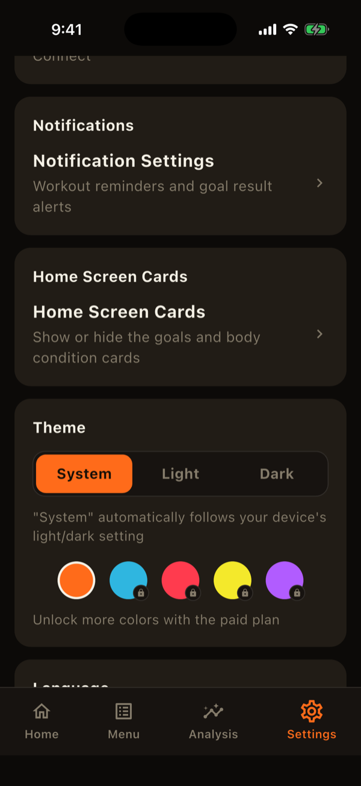

LiFTY's free plan covers the core features: logging, the calendar, menu management, and per-exercise progress. The paid plan extends them. For pricing, see the in-app purchase screen (Settings > Plan).
What you get for free
- Workout logging, the record calendar, personal bests, and body-part condition
- Up to 5 menus and 2 locations (there is no limit on the number of exercises)
- Charts up to 3 months in Analysis, Progress, and Body stats (one measure at a time in Analysis)
- Goals, Health app sync, and notifications
- Use without an account; your records are stored on your device
What the paid plan adds
- Cloud sync and backup: log in to restore your records when you change phones.
- Unlimited locations and menus
- Full analysis: 6 months to all time, custom ranges, overlaying two measures, PR history, and left/right difference. Progress and Body stats charts also cover all time.
- Color themes: five more color schemes besides the default orange.
- Data export (CSV): take your workout logs and body stats out as CSV.
- No ads

About logging in
Logging in is optional and is needed for cloud sync. You can log in with email, Apple, or Google. Logging in alone does not sync anything; sync is a paid-plan feature. If you log in on the free plan, your records stay on your device.
Features that work entirely on your device, such as raising the location and menu limits, can be purchased without logging in.
Purchasing and cancelling
Purchase from Settings > Plan (monthly and yearly options). To cancel, use the subscription settings of the store you bought from, such as the App Store. Deleting your account in the app does not cancel your subscription automatically.
When the paid plan ends
When your plan ends, locations and menus beyond the free limits are archived automatically, newest first. Your records and charts are not deleted. A notice appears when you next open the app, and you can review and restore items from Settings > Data > Archive (restoring works within the free limits). Your chosen color theme is kept but displayed in the default colors.
LiFTY is a workout log you can start using right away, with no account required.
Download on the App Store